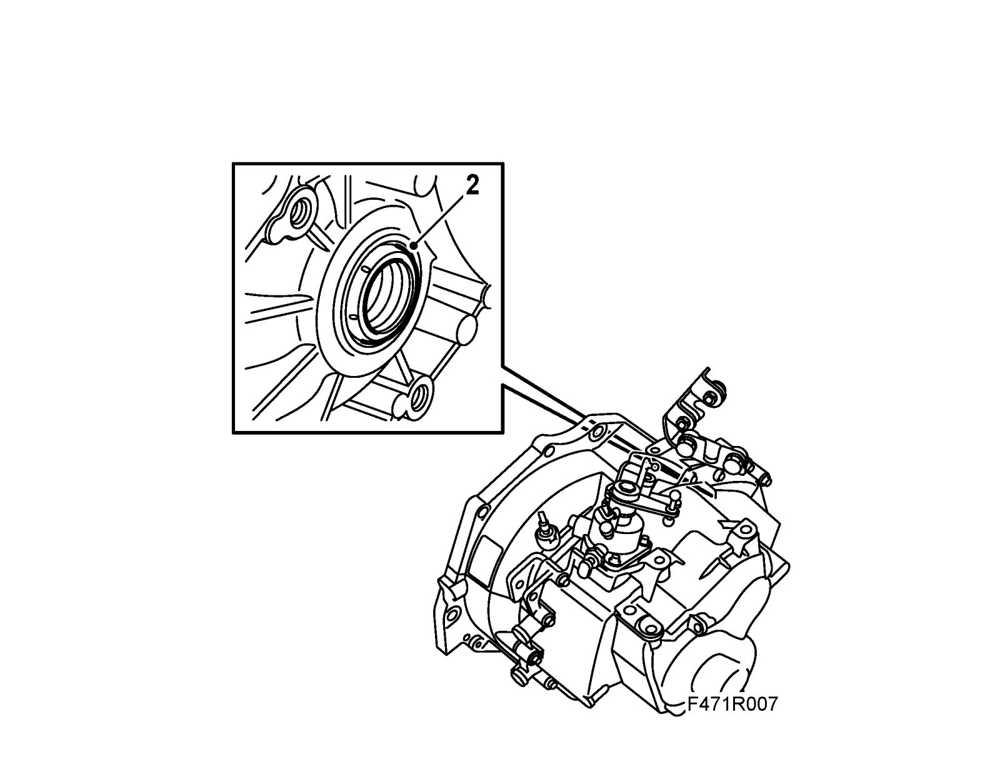
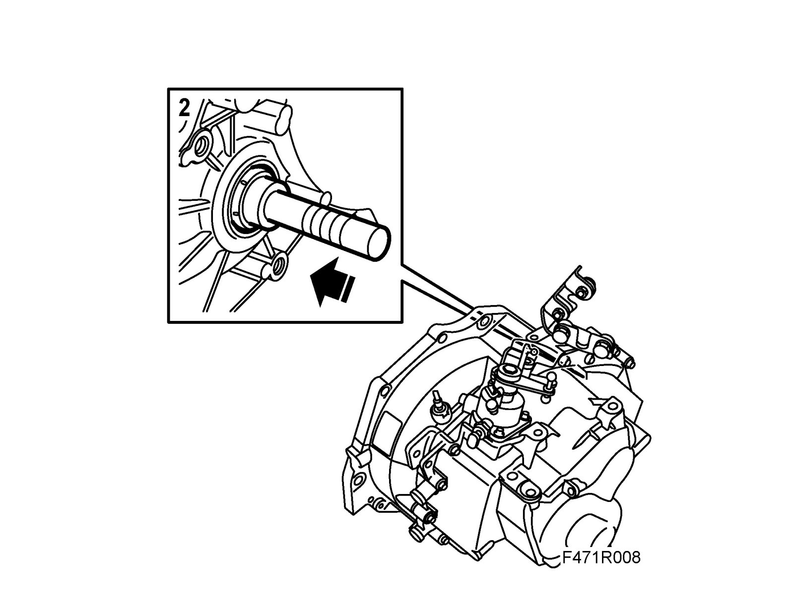

Drive Shaft Seal, Right-Hand
Drive shaft seal, right-handChanging in car
To remove
1. Remove the intermediate shaft. See Intermediate shaft or Intermediate shaft, Z19.
2. Remove the seal using a large screwdriver.
Note
Take care not to scratch the hole in the gearbox for the drive shaft seal.

To fit
1. Knock in place the new seal using
Man: 87 92 657 Fitting drift, drive shaft seals.
Aut 6-speed: 32 025 025 Fitting drift, drive shaft seal

2. Fit the intermediate shaft. See Intermediate shaft or Intermediate shaft, Z19.